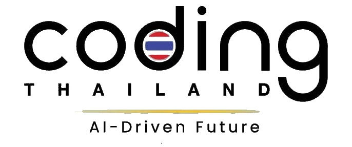

เกี่ยวกับผม
ภาพเลื่อนเองทุก 5 วินาทีศุภกฤต ก้องฐิติเดช
นักศึกษา ปวส. เทคโนโลยีสารสนเทศ วิทยาลัยเทคนิคสัตหีบ ชอบทำซอฟต์แวร์ที่แก้ปัญหางานจริง ตั้งแต่เว็บร้านค้า ระบบร้านอาหาร ไปจนถึงระบบความจำองค์กรที่รัน AI ในบริษัทเอง
- ตำแหน่งใน อวท.
- ประธานชมรมวิชาชีพ IT ปี 2569
- รางวัล
- รองชนะเลิศอันดับ 1 depa ภาคตะวันออก · ITED AR/VR
- ฝึกงาน
- IT · เทศบาลตำบลเขตรอุดมศักดิ์ 2568
- ภาษา
- ไทย (ภาษาแม่) · อังกฤษ B2
ผลงานโครงการ
กดการ์ดเพื่อดูรายละเอียดการแข่งขันและรางวัล
Competition & Awards · ภาพเลื่อนเองทุก 5 วินาที
Regional Coding & AI Competition (ภาคตะวันออก)
ระดับอาชีวศึกษา · โครงการ Coding Thailand 2025: AI-Driven Future สำนักงานส่งเสริมเศรษฐกิจดิจิทัล
National Coding & AI Competition
ผ่านเข้ารอบระดับประเทศ ประเภทอาชีวศึกษา · โครงการ Coding Thailand 2025: AI-Driven Future
2nd ITED Media Academy Contest 2025 · สื่อ AR/VR
ทีม Texas007 · สำนักพัฒนาเทคนิคศึกษา มหาวิทยาลัยเทคโนโลยีพระจอมเกล้าพระนครเหนือ
ภาวะผู้นำและกิจกรรม
Leadership & Student Organizationประธานชมรมวิชาชีพเทคโนโลยีสารสนเทศ
ชมรมวิชาชีพเทคโนโลยีสารสนเทศ เทคนิคคอมพิวเตอร์ และเครือข่ายคอมพิวเตอร์และความปลอดภัย · องค์การนักวิชาชีพในอนาคตแห่งประเทศไทย (อวท.)
โครงการอบรมพัฒนาผู้เรียนสู่ภาวะการเป็นผู้นำ ประจำปีการศึกษา 2569
จัดโดยชมรมวิชาชีพเทคโนโลยีสารสนเทศฯ อวท. วิทยาลัยเทคนิคสัตหีบ
ประสบการณ์และการศึกษา
นักศึกษาฝึกงานด้าน IT · เทศบาลตำบลเขตรอุดมศักดิ์
- สนับสนุนงานไอทีให้บุคลากรของเทศบาล
- บำรุงรักษาคอมพิวเตอร์และแก้ไขปัญหาการใช้งาน
- ติดตั้งและตั้งค่าซอฟต์แวร์และฮาร์ดแวร์
- ดูแลระบบคอมพิวเตอร์และเครือข่ายในสำนักงาน
ปวส. เทคโนโลยีสารสนเทศ · วิทยาลัยเทคนิคสัตหีบ
ปวช. เทคโนโลยีสารสนเทศ · วิทยาลัยเทคนิคสัตหีบ
ทักษะ
Hard skills · Soft skillsHard Skills
Front-end
ทำหน้าเว็บที่ใช้ได้ทั้งมือถือและคอม รองรับธีมสว่าง/มืดและสองภาษา
UX/UI
วาง sitemap, user flow และ wireframe ก่อนลงมือเขียนโค้ด
Back-end / API
เขียน API ระบบสมาชิก และส่งอีเมลยืนยันจากฝั่งเซิร์ฟเวอร์
PostgreSQL
ออกแบบตาราง functions และ business rules ไว้ที่ฐานข้อมูล เช่น 28 ตาราง 32 functions ใน Shabu Mood
Security
กำหนดสิทธิ์รายแถวด้วย RLS 54 policies แยกสิทธิ์ตามบทบาท และทดสอบความปลอดภัยก่อนเผยแพร่เว็บ
AI / LLM
ใช้ LLM ในเครื่องด้วย Ollama ทำ embedding เพื่อค้นข้อมูล และใช้ AI สร้างภาพและวิดีโอโฆษณา
Data Processing
ทำความสะอาดและรวมข้อมูลจากหลายชีต ย้ายข้อมูลสินค้าจากเว็บเก่า และนำเข้าข้อมูล JSON
DevOps
รันระบบด้วย Docker Compose และ deploy เว็บขึ้น Netlify กับ Vercel
Testing
ทดสอบสิทธิ์ด้วยบัญชีทดสอบแต่ละบทบาท และไล่ทดสอบ flow สั่งซื้อก่อนเปิดใช้งานจริง
Soft Skills
Problem-Solving
แยกปัญหาของร้านหรือองค์กรเป็นขั้นตอนเล็ก ๆ แล้วทำทีละส่วนจนใช้งานได้
Critical Thinking
ตรวจว่าข้อมูลและผลลัพธ์ถูกต้องก่อนนำไปใช้ ไม่เชื่อผลจากเครื่องมือทันที
Analytical Thinking
อ่าน flow การทำงานจริง เช่น คิว โต๊ะ ออเดอร์ บิล แล้วแปลงเป็นโครงสร้างข้อมูลและสิทธิ์
Adaptability
ปรับแนวทางเมื่อวิธีเดิมไม่เหมาะ เช่น เปลี่ยนจาก OCR มาเป็นนำเข้า JSON ในแชตบอตตารางสอน
Teamwork
แข่งขันเป็นทีมจนได้รางวัลจาก depa และ ITED Media Academy และทำงานร่วมกับสมาชิกชมรม
AI Collaboration
ใช้ AI ช่วยเขียนโค้ดให้เร็วขึ้น แล้วตรวจ แก้ และทดสอบผลงานด้วยตัวเอง